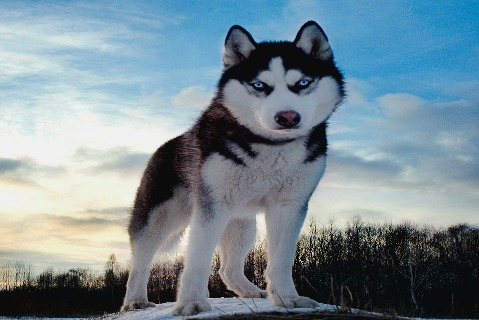

There are many different dog types and breeds in the world. Dogs of all sorts of shapes and sizes. Big, small and every size in between. Many different colors as well liver, white, brown, black etc. Dogs also make great pets and I have been lucky enough to have multiple dogs growing up. They truly are mans best friend and I feel blessed to have so many great memories with my dogs as well as my friends dogs.
